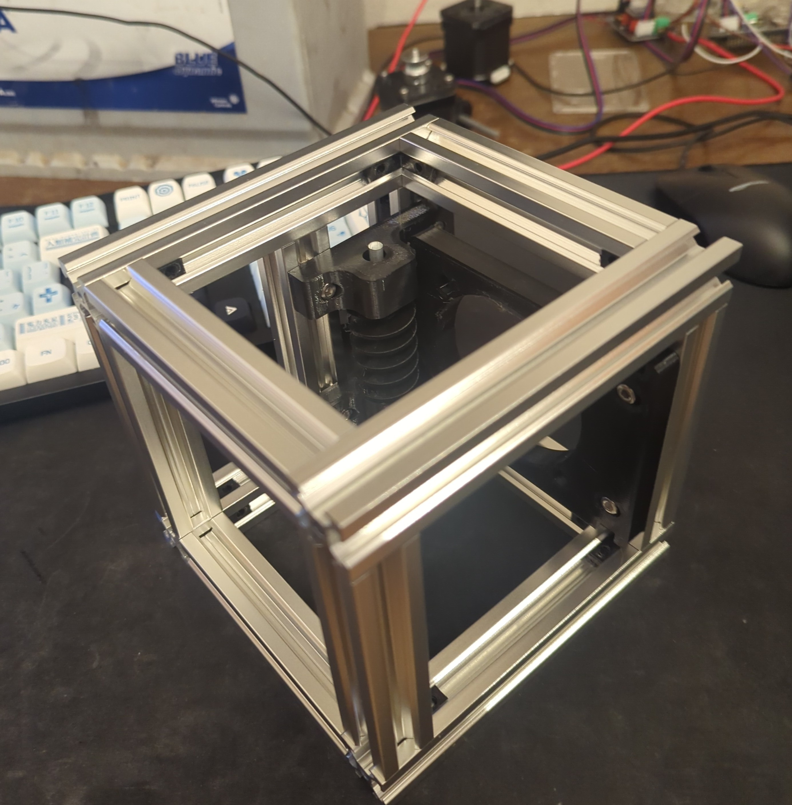
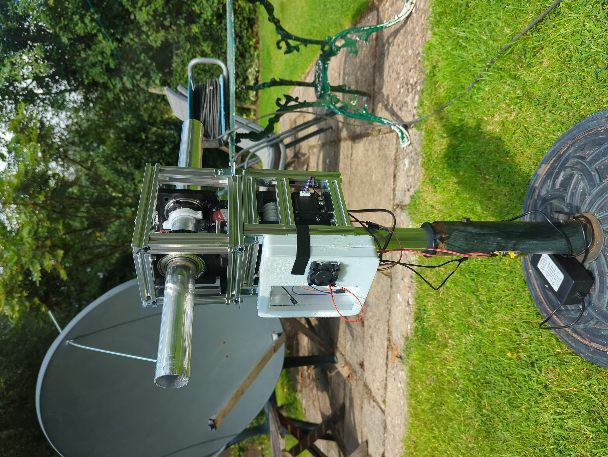
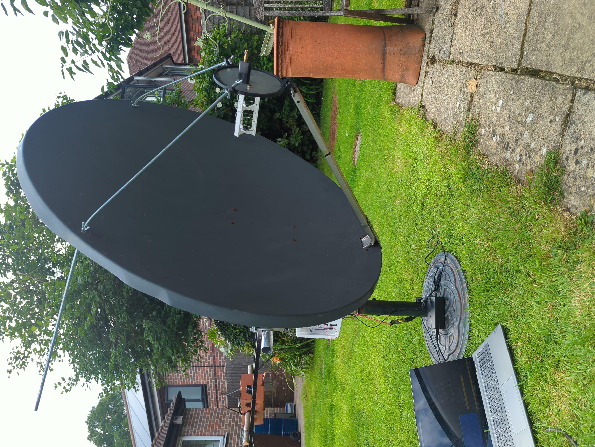
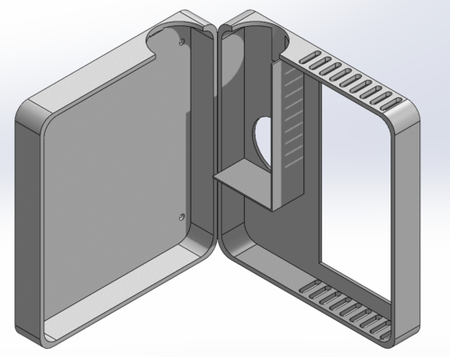
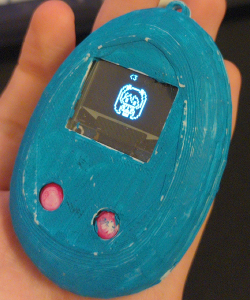
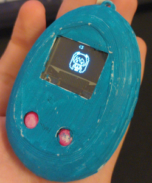

Satellite Dish Rotator [Work in Progress] Files
This is a rotator for a satellite dish I'm using to receive weather satellite imagery (example). A dish isn't necessary for low resolution images, but the higher quality images are transmitted at much higher frequencies that require a dish to pick up.
This design is based on the SatNOGS Rotator v3, with some modifications here and there, and using custom code.
Hardware
The design is made of two cuboid frames made from aluminium extrusion connected with 3D printed L brackets for initial fit, and then secured with metal ones and T-slot nuts and bolts. The two cuboids each house a 40mm diameter aluminium tube, each of which is rotated by a stepper motor via a worm gear. Side Note: All 3D printed parts in this project are made with PETG. This is because it is much stronger than PLA, and it's all I had at the time.


Left: One of the aluminium cuboids, with a worm gear and one bracket for the aluminium tube. Right: A 3D model for the printed L brackets to hold the aluminium frame together. These are printed to be a friction fit.
This design does not have immediate feedback for dish azimuth and elevation, instead doing a homing sequence periodically and using a limit switch to mark a known point. The stepper motors move in very small steps, so these work well to calculate the azimuth and elevation as the dish moves from its 'home' position
The mechanism for connecting the dish to the aluminium arms hasn't been made yet, but it will be a slot cut through the diameter of each arm, that the dish mounts slide into. This will allow the dish-rotator and counter weight-rotator distances to be adjusted if the feed is changed, for example.
I have been testing this design with a solid dish, made from some sort of sheet steel. This dish will be replaced, as currently it is far to heavy to be moved about without the stepper motors stalling occasionally. The Summer 2026 plan is to make a 1-2m diameter mesh dish, which will be much lighter.


Left: The assembled rotator as of August 2025. Right: The rotator with the dish mounted. The dish is currently counter-weighted with two bricks, which is visibly bending the lever arm.
Electronics
The rotator moves using two 48mm long NEMA 17 stepper motors, which in turn are powered using DRV8825 drivers. These are controlled with an Arduino Pro Mini that communicates to a computer running a rotctld instance to communicate between the Arduino and in this case SatDump.
The power for this is supplied by the USB connected to the Arduino for 5V, and a modified laptop charger for 24V for the motor drivers. As the drivers are turning with a very high torque, the drivers emit a large amount of heat. A 5v cooling fan has been attached to the exterior of the case to reduce the driver temperature.

Above: The box the electronics are stored in. The drivers are located in the smaller section in the right hand door, which will funnel air from the fan across the heatsinks.
Code
The code runs an implementation of the EASYCOMM II Standard (specification here). I'll talk about it later as it isn't finalised yet.
 

{kind=link}